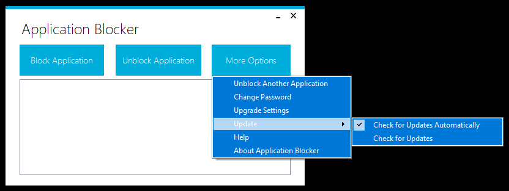
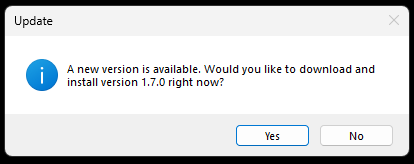

Updates

Application Blocker can automatically check for updates and alert you when a new version is available. You can also check for updates at anytime by clicking "More Options" -> "Update" -> "Check for Updates". You can enable or disable automatic update checking by clicking "More Options" -> "Update" -> "Check for Updates Automatically". Please note that automatic update check may slow down Application Blocker startup on some systems.
Updating
If a new version is available, the tool will show an alert. You can click "Yes" to automatically update to the new version. You don't need to uninstall the old version, it will be automatically done while installing the newer version. Click "No" to update later.
